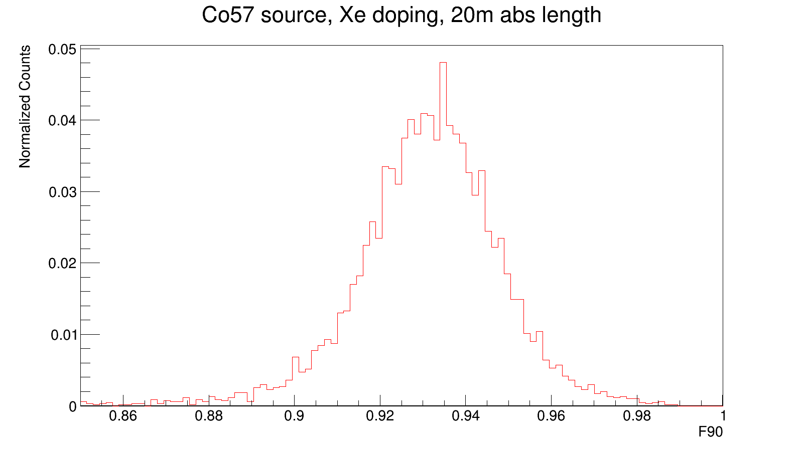

Xe Doping Status
John Mastroberti
March 28, 2022
Reminder: Results from last time
-
Decreasing LAr absorption length from 20m to 66cm significantly
impacted light yield
-
XeDLAr (with 150cm absorption length) showed much higher light
yield than undoped LAr
- F90 significantly increased with Xe doping
- Strange two-peak structure showing up in Kr83 F90 plot
- PMT top fraction also significantly influenced by Xe doping
Adjusting the treatment of Absorption Length
-
Previously, the absorption length was set to a constant value for
all wavelengths
-
No luck finding a source for absorption length vs wavelength yet
-
I tried setting $\lambda_{abs}$ to 66cm, 150cm for scintillation
wavelengths, with 20m used for wavelengths above 180nm (visible
light)
Investigating F90 dual peaks

F90 for Co57 definitely has only one peak
TO-DO
- Top PMT vs bottom PMT 2D histogram
- Look at a smaller F parameter (e.g. F40)
-
Consider correlation between scintillation time and wavelength
- Look for more literature values for absorption lengths